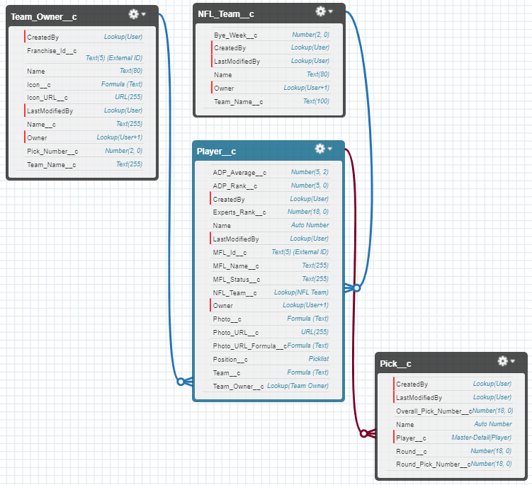

Fantasy Football Draft Application
In 2012, my husband started a Fantasy Footbal League - the Golden Helmet League - of which he is commissioner
As we know needed to draft our teams, we needed a way to capture the draft as it happened. He looked around but didn't find anything that worked the way he wanted it to, and I was fairly technical, he asked if I could build one. At the point, most of the code I wrote was VBA for Excel, so for our first year - and the following 8 years, our draft board was built in Excel. And it was fine - not perfect - but acceptable for a quick win.
In 2020, I found myself with time on my hands (because, you know, we weren;t going out so much), and having become an accomplished developer on the Salesforce platform, I decided to try and rebuild the draft application within Salesforce
Building the data model
Setting up the APIs
My Fantasy League Developer Documentation